Ninety-eight algorithmic art generators, each constrained to a single output: a pen on paper. Every visual parameter serialized. Density, curvature, spacing, scale.
The name is borrowed from mid-twentieth century music. In total serialism, every parameter of a composition is governed by a predetermined series: not only pitch, as in twelve-tone technique, but rhythm, dynamics, timbre, articulation. Boulez, Stockhausen, and Babbitt pursued the idea to its logical end, constructing pieces where nothing was left to intuition and everything was derived from combinatorial structure.
This catalog applies the same discipline to generative line art. Each of the 98 algorithms serializes its own set of visual parameters: flow field direction and magnitude, fractal iteration depth and bail-out threshold, cellular automata rule number and neighborhood radius, reaction-diffusion feed and kill rates. Every parameter can be swept, randomized within bounds, or locked. The output medium is always the same: a pen moving across paper. No fills. No raster. No opacity gradients. Just continuous strokes that a plotter can trace.
The constraint is not decorative. It is structural. A pen plotter cannot lift and lower its pen faster than its stepper motors allow. It cannot blend colors on the page. It cannot vary line weight within a single stroke (without swapping tools). These physical limits feed back into every algorithm. Density must be modulated through stroke spacing, not opacity. Texture must emerge from path curvature, not pixel noise. Contrast must come from the accumulation of lines, not tonal gradation.
The taxonomy reflects the mathematical genealogy of each algorithm family, not visual similarity. Two generators might produce visually similar output but derive from entirely different formalisms. The categories:
Parameter space design follows a consistent philosophy across all 98 generators. Each algorithm exposes between four and twelve parameters, enough to produce meaningful variation without overwhelming the viewer. Defaults are chosen so that a first render always produces a legible, plottable result. The parameter space is bounded so that extreme values degrade gracefully rather than collapsing into visual noise or empty output. Randomization operates within these bounds, not outside them.
A systematic audit of the full catalog in April 2026 revealed these failure modes.
These are the natural consequences of building 98 systems in parallel. The broken paths will be repaired, the export pipeline standardized, the parameter persistence unified.
Ninety-eight generators, organized by algorithmic family. Each tile represents a single generator. The bar indicates relative parameter complexity. Hover for identification. Full interaction available in the live app.
Particles traced through continuous 2D vector fields derived from 2D/3D Perlin noise (typically 3-5 octaves), curl of a scalar potential, or analytical functions. Stroke density emerges from seeding strategy, not opacity.
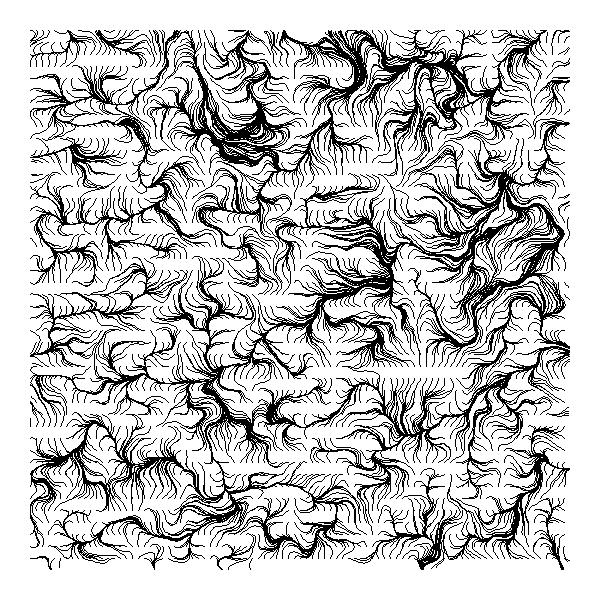
Self-similar structures at multiple scales. Mandelbrot set boundaries traced as contour isolines via marching squares, Julia set orbits rendered as stroke paths, IFS attractors (Barnsley fern, Sierpinski triangle) built from iterated affine transformations.
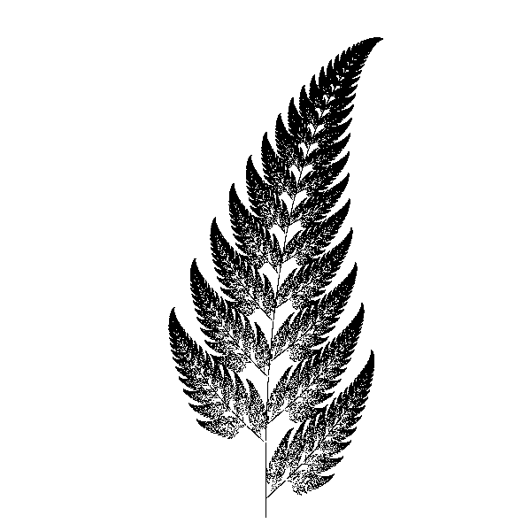
Discrete state machines on lattices. Elementary automata (1D), Game of Life variants (2D), and custom rule tables. State transitions rendered as pen-up/pen-down sequences or continuous boundary traces.
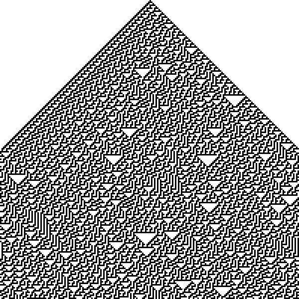
Gray-Scott model with feed rate F and kill rate k controlling morphology. Two virtual chemicals diffuse at different rates and react; the pen traces concentration isolines. Spots (F~0.035, k~0.065), stripes (F~0.025, k~0.060), and labyrinthine networks emerge from the F/k parameter plane.
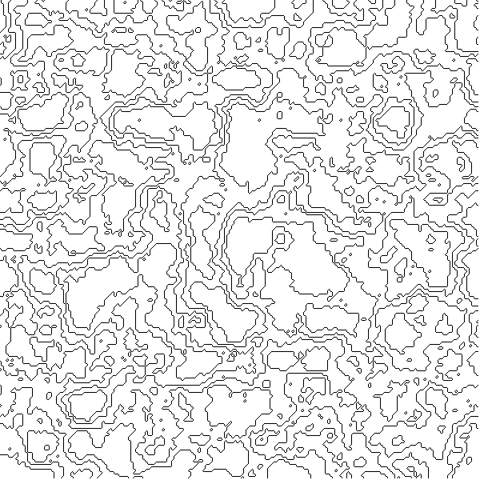
Greedy and Apollonian packing algorithms. Circles drawn as single-stroke arcs; density emerges from the recursive subdivision of negative space.
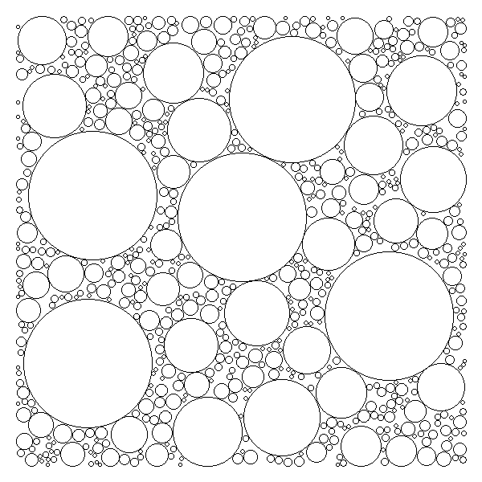
Verlet integration, spring-mass systems, gravitational n-body, and pendulum chains. Trajectories plotted as continuous paths; the pen records the memory of motion.
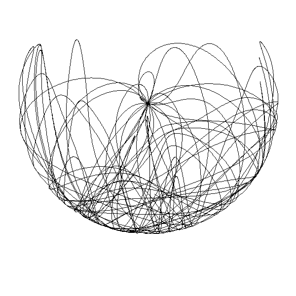
Differential growth, DLA aggregation, and space colonization. Forms that grow, branch, and self-organize according to local rules. The pen builds structure through accretion.
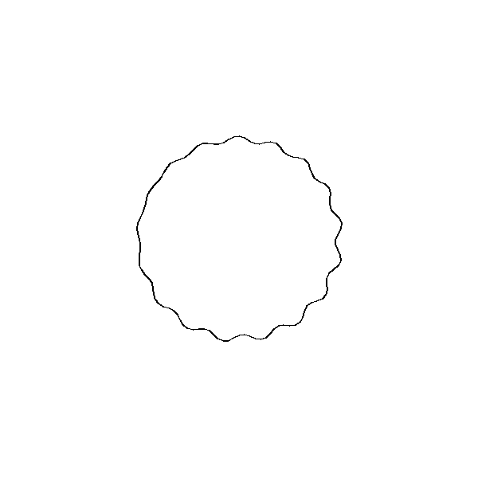
Girih tiles, rosette constructions, and star polygon interlacing. Geometric systems refined over centuries of architectural practice, now parameterized.
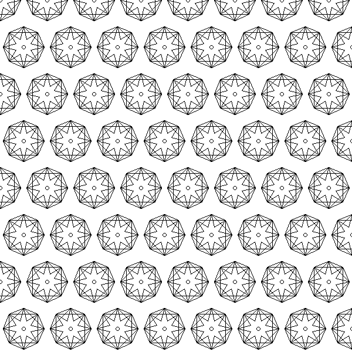
Interference patterns from overlaid periodic structures. Concentric circles, parallel lines, or radial grids, slightly offset. Emergent large-scale structure from simple repetition.
Photograph-to-vector conversion. Edge detection, halftone dithering, contour tracing, and TSP-based stippling. The pen redraws a raster image as a continuous line drawing.
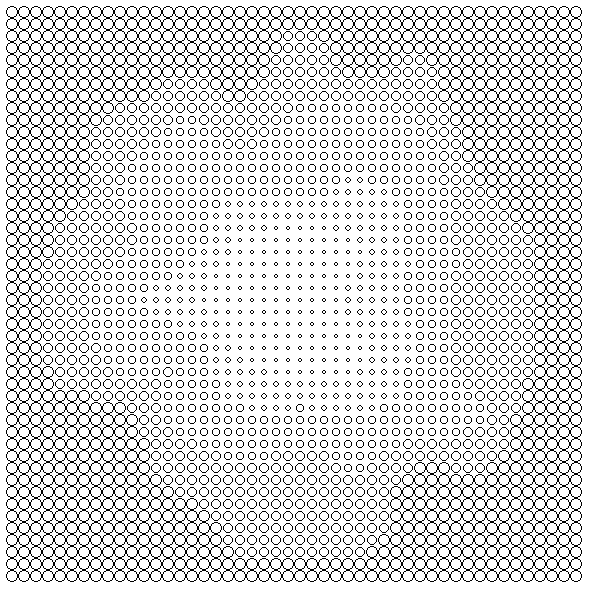
Hilbert (order-n, 4^n segments), Peano (9^n), Moore (closed Hilbert variant), and Gosper (hexagonal) curves. A single unbroken line that visits every cell in a grid. Zero pen lifts; density scales with order.
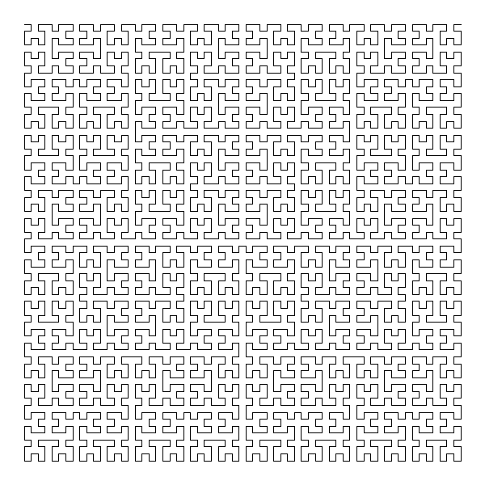
Penrose, Voronoi, Delaunay, and Escher-style deformations. Plane-covering patterns with varying symmetry groups, drawn edge by edge.
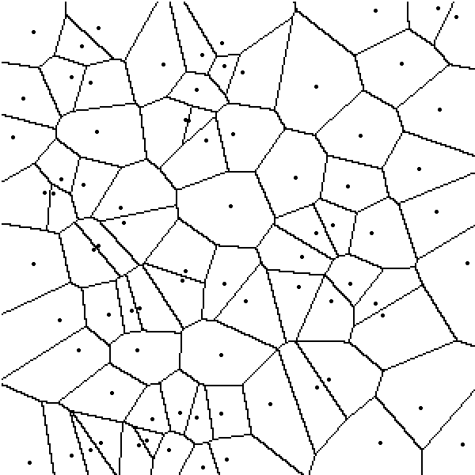
Lindenmayer systems: string rewriting rules interpreted as turtle graphics. Botanical branching, Koch snowflakes, dragon curves. Grammar as geometry.
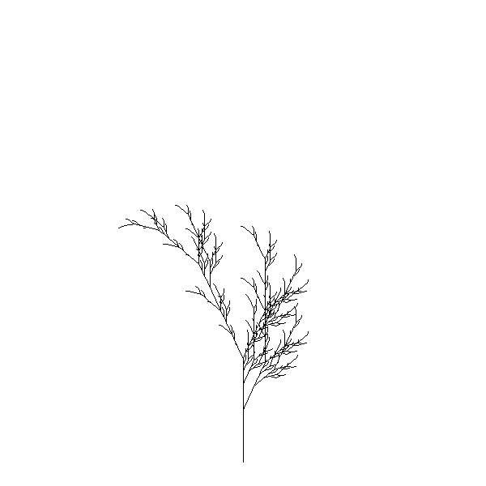
2D Perlin (gradient), simplex (triangular grid), and Worley (cellular distance) noise fields rendered as contour maps, ridgelines, or elevation slices. Octave count controls detail; lacunarity controls frequency gaps.
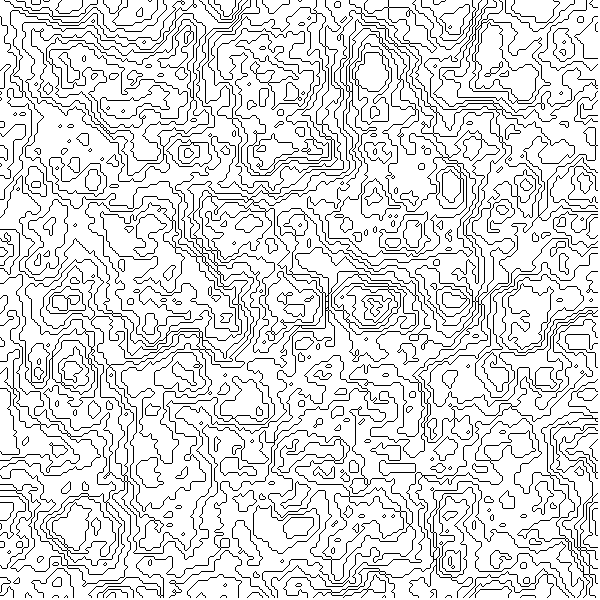
Superposition of sinusoidal wave sources. Constructive and destructive interference rendered as displacement of parallel lines.
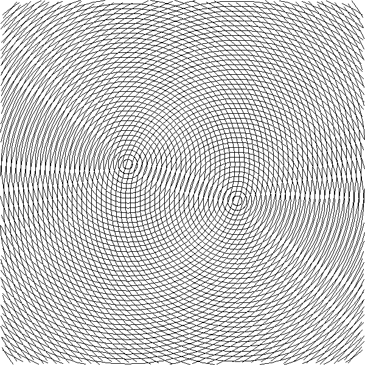
Spirographs, Lissajous figures, parametric curves, and radial symmetry constructions. The simplest building blocks, parameterized to exhaustion.
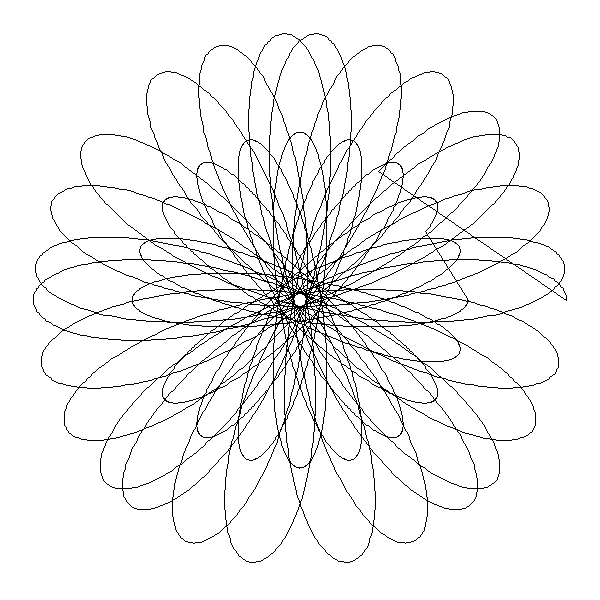
The algorithm proposes paths. The pen negotiates what it can actually draw. Six specimens survived.
§03 Best of Run
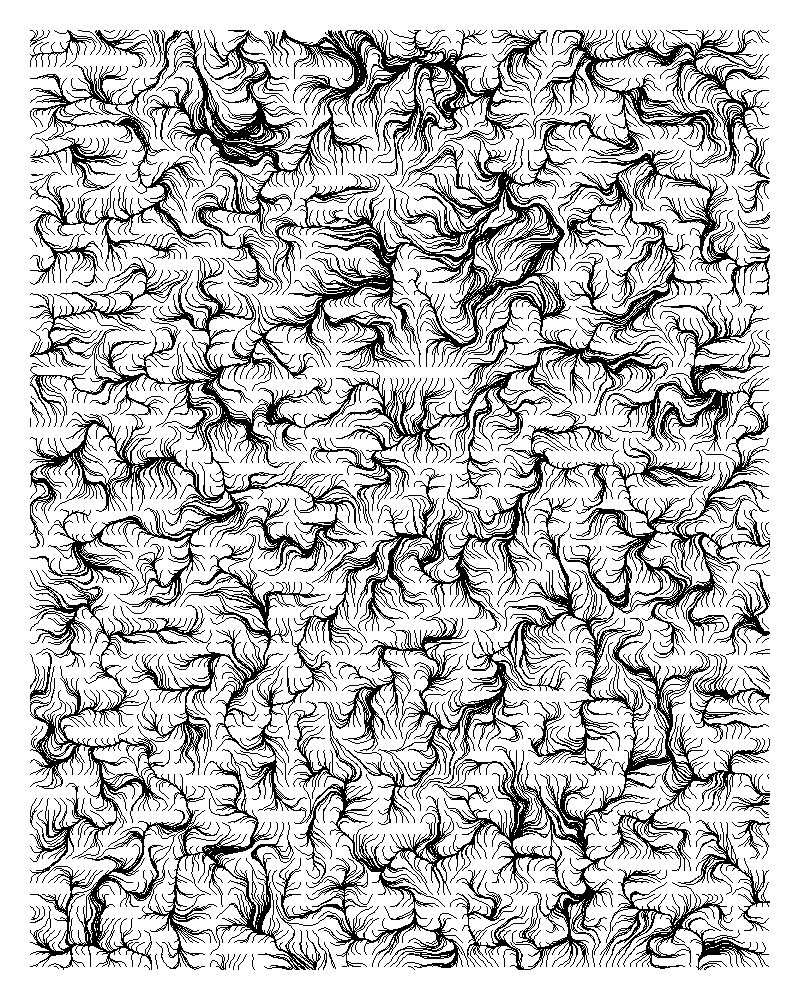
Flow fields are the most familiar family in the catalog. Every generative art tutorial begins here: Perlin noise driving particles across a canvas. The visual language is so well-established that it risks becoming wallpaper.
What the pen constraint reveals is the gap between the familiar and the physical. On screen, a flow field is a million translucent particles fading into soft accumulation. On paper, it is a finite number of ink strokes, each one opaque, each one permanent. There is no alpha channel. There is no blending mode. The pen either touches the paper or it does not.
This binary condition forces a different kind of density management. Where a screen renderer accumulates transparent layers to build tonal variation, the plotter must modulate stroke spacing. The twelve flow field generators in this catalog represent twelve different strategies for this modulation: variable step length, adaptive seeding density, stroke termination at convergence points, repulsion between active paths. Each strategy produces a visually distinct result from the same underlying vector field.
The strongest specimens emerge from curl noise fields, where the divergence-free property creates naturally laminar flow. Particles never cross. The pen traces parallel channels that compress and expand like the streamlines of an actual fluid. The weakest specimens come from high-frequency Perlin fields, where the noise oscillates too rapidly for the pen's mechanical resolution. The strokes jitter into visual static. The algorithm cannot see the pen's limitations; it proposes paths the hardware cannot follow.
Fractals present the most direct confrontation between algorithm and constraint. A Mandelbrot boundary has infinite detail at every scale. A pen has a fixed nib width. The question is not whether to truncate the infinite, but where, and the answer is never mathematical. It is mechanical. The pen's minimum stroke width determines the deepest zoom level. The plotter's positional accuracy determines the finest contour spacing. The paper's absorbency determines how close two wet ink lines can sit before they bleed together.
The nine fractal generators in this catalog each solve this truncation problem differently. The Mandelbrot contour tracer uses marching squares on a discrete grid, producing clean isolines that the pen can follow without hesitation. The Julia set orbit tracer takes a different approach: it plots the trajectory of each point through iteration space as a continuous stroke, producing tangled webs that look less like mathematics and more like nervous system diagrams.
The IFS generators (Barnsley fern, Sierpinski variants) are the most pen-friendly because their self-similarity is structural, not infinitesimal. Each recursive level adds new strokes at a fixed, predictable density. The generator can control exactly how many levels to render before the pen runs out of resolution. There is no asymptotic collapse. The fractal bottoms out cleanly.
The most interesting failures come from generators that attempt to render escape-time fractals at high iteration counts. The contour lines become so closely spaced that the pen cannot distinguish them. What should be delicate filigree becomes a solid block of ink. The algorithm sees structure; the pen produces mass.
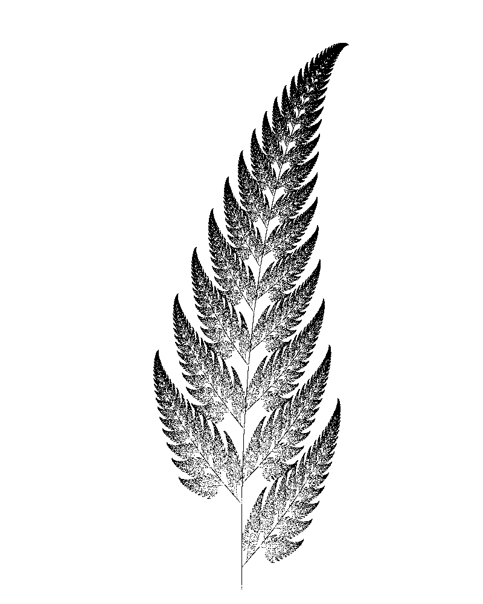
Cellular automata are fundamentally discrete. A cell is alive or dead. A state is 0 or 1 (or 2, or 255). Time advances in integer steps. Space is a lattice. There is no interpolation, no gradient, no curve. And yet the pen draws curves. The pen moves continuously. The translation from discrete automaton to continuous stroke is the most interesting design problem in this category.
Three strategies appear across the seven generators. The first is literal: each living cell is drawn as a small filled square or circle, producing a pointillist bitmap. This works, but it wastes the pen's most valuable property (continuity) on the automaton's least interesting property (individual cell state). The second strategy traces the boundary between living and dead regions as a continuous contour. This produces organic, amoeba-like forms from Game of Life variants, and surprisingly architectural forms from elementary automata. Rule 110, drawn as boundary contours, looks like a cross-section through a gothic cathedral.
The third strategy, and the one that produces the strongest specimens, treats each generation as a horizontal line and stacks them vertically to produce a spacetime diagram. The pen draws one continuous horizontal stroke per generation, lifting only at dead cells. The result is a textile-like weave where the warp is time and the weft is space. Wolfram's elementary automata, drawn this way, become fabrics. Rule 30 produces tweed. Rule 90 produces lace. Rule 184 produces corduroy.
The physics generators and the organic growth generators are siblings. Both simulate systems that evolve over time. Both produce output by recording trajectories. The distinction is in what moves and why. Physics generators track point masses under forces: gravity, springs, repulsion, friction. Organic growth generators track boundaries that expand according to local rules: differential growth inflates a curve until it folds on itself; DLA lets particles wander until they stick.
For the pen, physics simulations produce the most naturally plottable output. A pendulum's trajectory is already a continuous curve. A spring-mass system's oscillation is already a stroke. The pen simply follows the particle through time. The 8 physics generators in the catalog exploit this natural alignment: double pendulums whose chaotic trajectories form dense, tangled knots without ever repeating, gravitational three-body problems that produce figure-eight orbits, and Verlet-integrated cloth simulations that drape like actual fabric.
Organic growth is harder to plot. Differential growth produces curves that fold and crumple into increasingly tight spaces. At high iteration counts, the boundary becomes so convoluted that the pen must navigate hairpin turns at the limit of its mechanical resolution. The best specimens are the ones that stop early, before the growth exhausts the available space. There is a window, usually between 200 and 400 growth iterations, where the form is complex enough to be interesting and open enough to be legible. Before that window, it is a wobbly circle. After it, it is a solid mass.
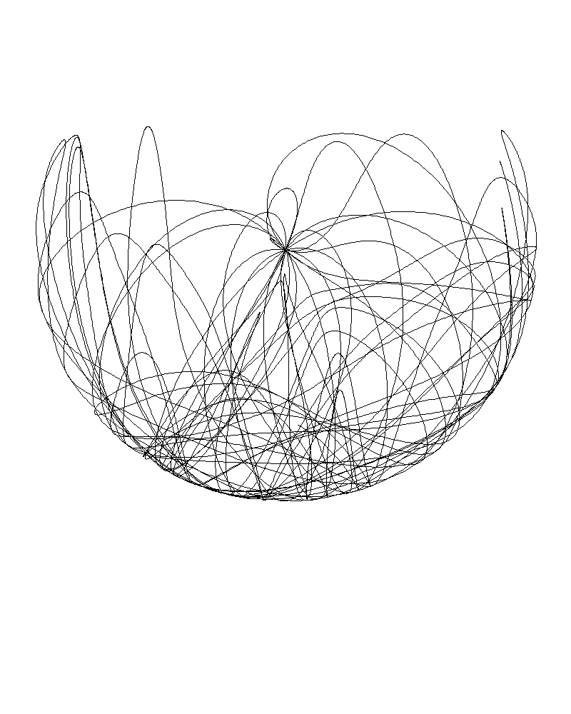
Islamic geometric patterns are the oldest algorithms in this catalog by approximately a millennium. The girih tile system, documented in the Topkapi scroll (fifteenth century, though the patterns predate it by several hundred years), describes a set of five tile shapes whose edges carry decoration lines. Placed correctly, the decoration lines join across tile boundaries to form continuous interlacing patterns of extraordinary complexity.
These are, in the most literal sense, procedural generators. The algorithm is the tiling rule. The parameters are the tile vocabulary, the scale, and the interlace depth. The output is a continuous line drawing. The pen plotter is, arguably, a more faithful reproduction technology than any used by the original craftspeople, because it executes the geometric construction with perfect mechanical precision. A human hand introduces warmth and variation. The plotter introduces neither. The result is strangely cold, and that coldness is itself informative: it reveals how much of the beauty of historical Islamic geometry comes from the imperfection of its execution rather than the perfection of its design.
The tiling generators (Penrose, Voronoi, Delaunay) are a different matter. Where Islamic geometry is ancient and deterministic, Penrose tiling is modern and aperiodic. The pen traces edge networks that never repeat, producing drawings that have local order but no global period. Voronoi diagrams partition the plane according to proximity. Delaunay triangulations maximize minimum angles. Both produce clean, pen-friendly edge networks. The visual difference between them is subtle but consistent: Voronoi cells are organic and rounded, Delaunay triangles are angular and tense.
Space-filling curves are the purest expression of the pen plotter constraint. A Hilbert curve visits every point in a region without lifting the pen. There is one stroke. It begins, it covers the entire surface, it ends. The drawing is complete. For the plotter, this is the ideal algorithm: maximum ink coverage with zero pen-lifts, which means zero wasted travel time and zero risk of registration error from repositioning.
At low recursion depths, space-filling curves are diagrams. At high depths, they become textures. The transition happens around depth 5 or 6 for a Hilbert curve on A3 paper: the individual turns become too small to distinguish, and the eye perceives uniform density rather than path. This is the opposite of the fractal problem. Fractals have too much detail for the pen. Space-filling curves have exactly the right amount of detail, and the question is whether that detail remains perceptible or dissolves into tone.
The wave interference generators occupy a similar conceptual space. They produce patterns by displacing parallel lines according to the superposition of point sources. The pen draws each line as a single continuous stroke, modulated by the interference field. The result looks like water. Concentric ripples from multiple sources create zones of constructive interference (where lines crowd together) and destructive interference (where they spread apart). The visual effect is three-dimensional despite being purely two-dimensional. The pen is drawing elevation; the eye is perceiving depth.
Wave interference patterns degrade gracefully at every parameter setting. They plot quickly because parallel lines are mechanically efficient. By every practical measure, they are the most well-behaved algorithms in the collection, and for that reason, the least interesting to study. There is no tension between algorithm and constraint. The constraint simply accommodates.
§04 Colophon
Continue